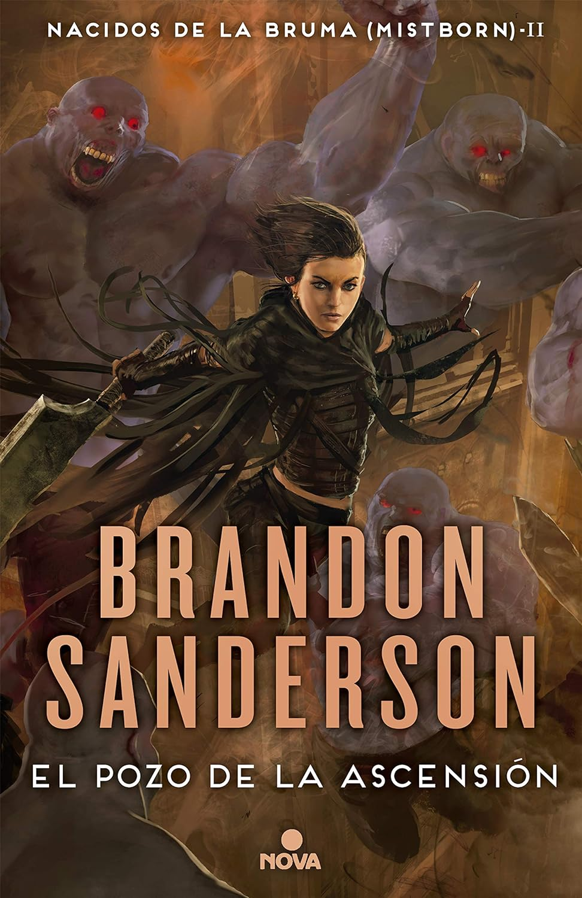
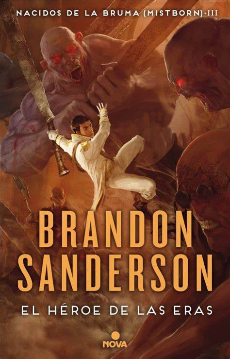

Portada de Imperio Final

Portada de El pozo de ascensión

Portada de El Héroe de las Eras

Nacido en la bruma es una saga de literatura fantástica escrita por el autor estadounidense Brandon Sanderson. Ambientada en un mundo llamado Scadrial, la saga combina elementos de la alta fantasía, la intriga política y la magia única del sistema de alomancia.
La saga se divide en dos eras principales, cada una con su propia trilogía o tetralogía, y está ambientada en diferentes períodos de tiempo dentro del mismo mundo.
En la primera era, que comprende la trilogía inicial, se presenta un mundo oscuro y asolado por el dominio del Lord Legislador, un gobernante despótico y poderoso, y donde los nobles, dotados de poderes alománticos, ejercen un dominio implacable sobre los skaa, la clase trabajadora. Los protagonistas de esta era son Vin, una joven delincuente con habilidades alománticas latentes, y Kelsier, un ladrón y nacido de la bruma (un alomántico que puede quemar todos los metales). Juntos, forman una banda de rebeldes y planean derrocar al Lord Legislador y liberar al pueblo de la opresión.
En la segunda era, que abarca una tetralogía, el mundo ha evolucionado cientos de años después de los eventos de la primera era. La sociedad ha avanzado tecnológicamente y se encuentra en una época similar a la era industrial. Los protagonistas de esta era son Waxillium Ladrian, un noble y alomántico que regresa a la ciudad de Elendel para hacerse cargo de los asuntos familiares, y Wayne, su leal compañero y experto en disfraces. Juntos, se ven envueltos en una trama de intriga política, corrupción y amenazas misteriosas que ponen en peligro la estabilidad de Scadrial.
| Título | Fecha de Publicación |
|---|---|
| El Imperio Final | 2006 |
| El Pozo de Ascensión | 2007 |
| El Héroe de las Eras | 2008 |
| Título | Fecha de Publicación |
|---|---|
| Aleacion de Ley | 2012 |
| Sombras de la Identidad | 2016 |
| El Metal Perdido | 2022 |